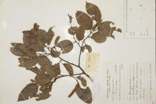

Images :



| Habit : | Trees up to 12 m tall. |
| Leaves : | Leaves simple , alternate , distichous ; petiole 0.8-1.2 cm long, flat above; lamina 4.5-10 x 2.3-5 cm, ovate , apex acute to acuminate , base acute , margin crenate , coriaceous , glabrous ; midrib slightly raised above; secondary_nerves 6-8 pairs, ascending; tertiary_nerves reticulo-percurrent . |
| Inflorescence / Flower : | Flowers small, in dense axillary spikes , greenish white flowers . |
| Fruit and Seed : | Capsule , many seeded . |